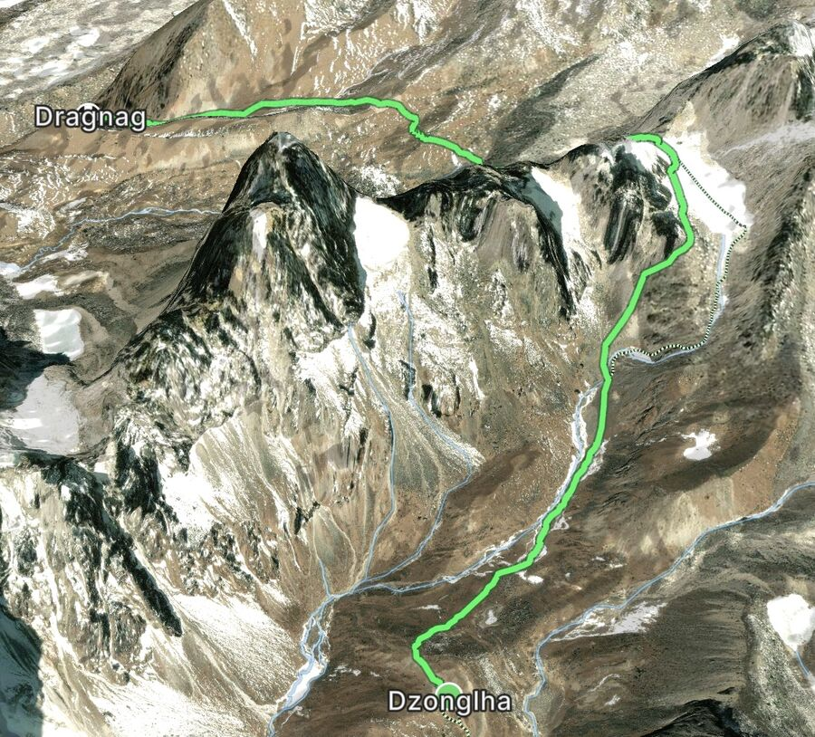
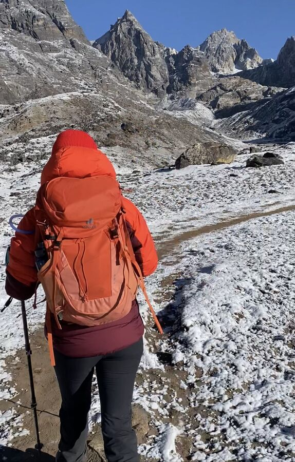
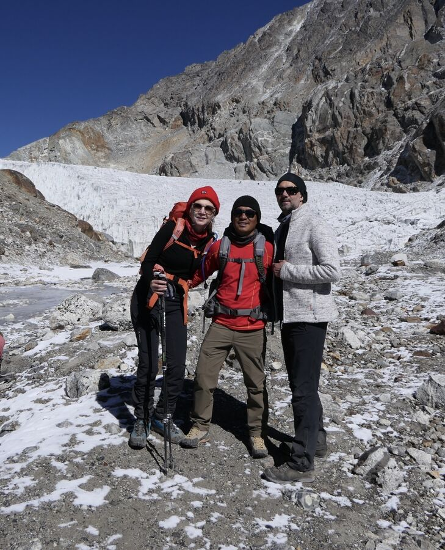
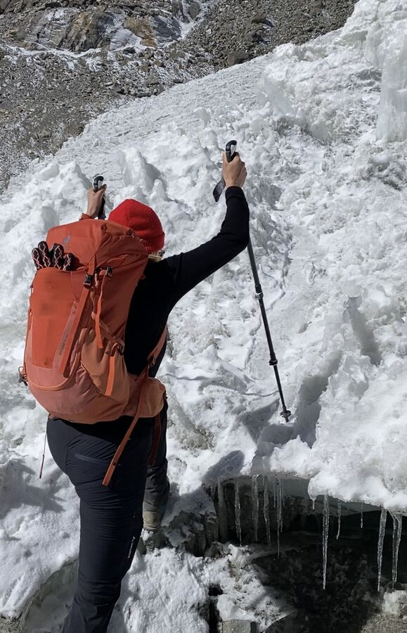
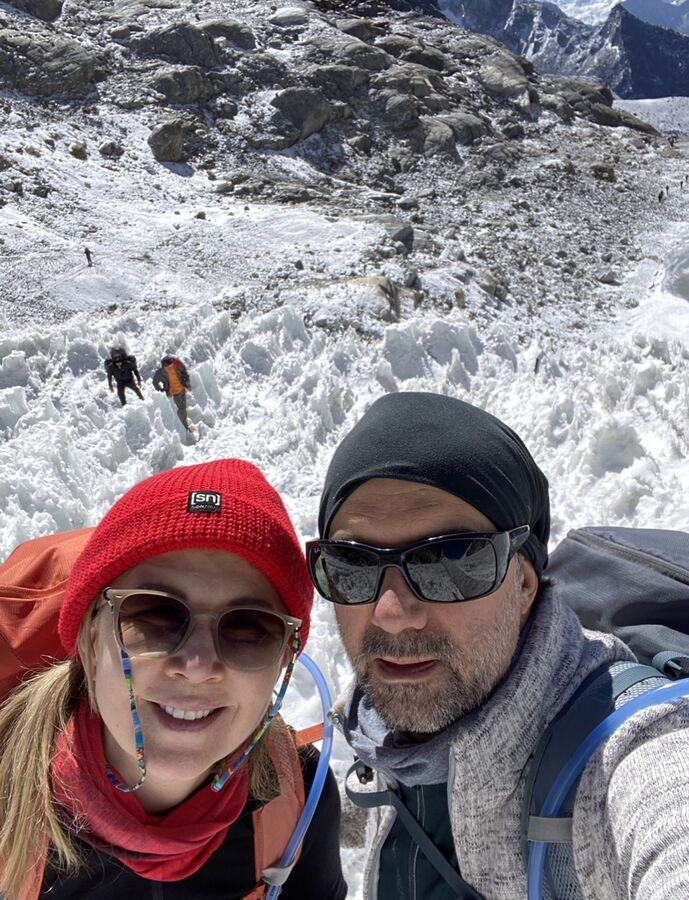
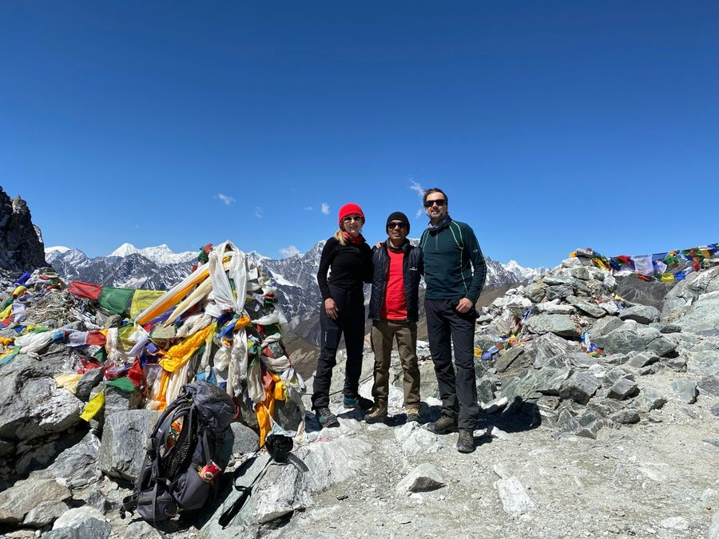
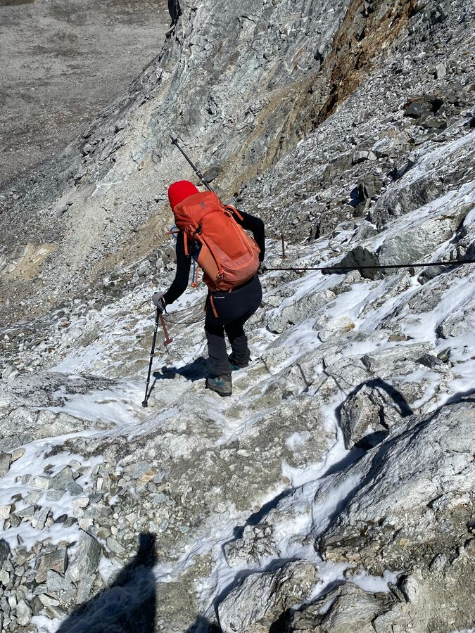
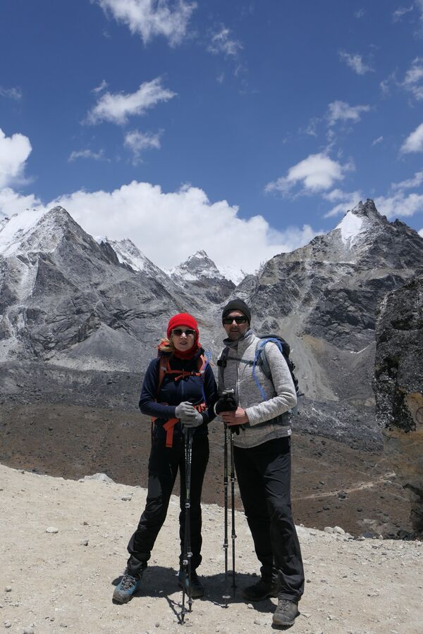
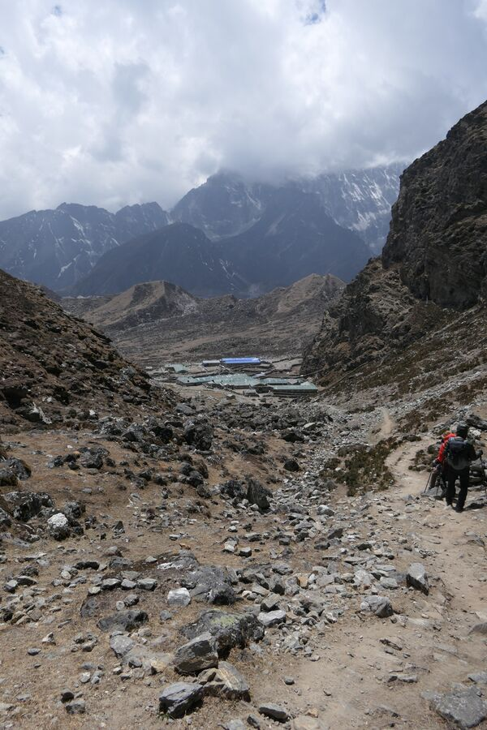
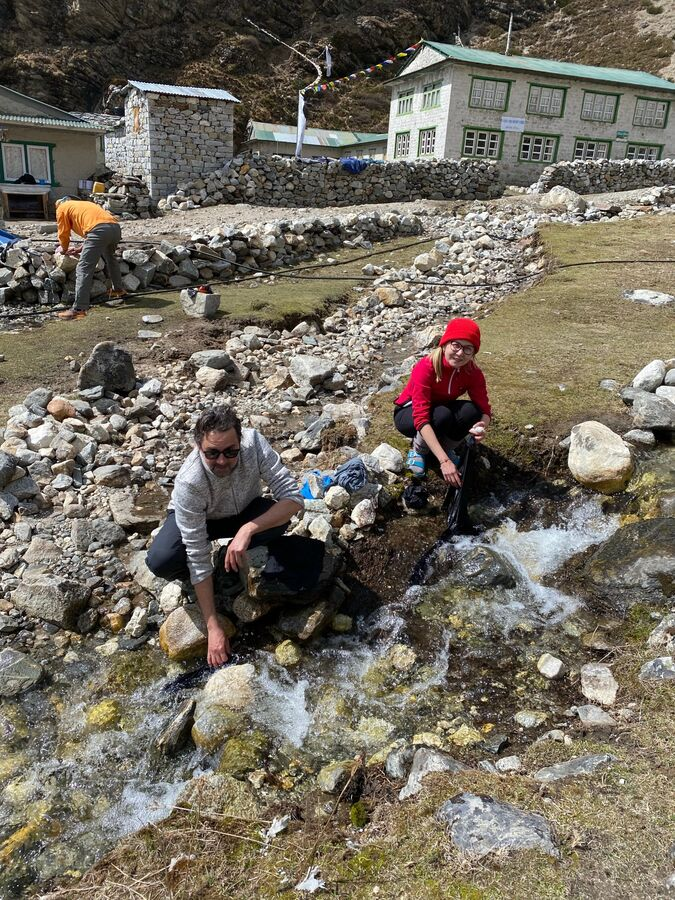

Der heutige Tag sollte ein langer und anstrengender werden. Ziel war es, den Gebirgspass am Cholatse (6.440m) zu übersteigen. 2009 war dort mein schwarzer Tag gewesen und ich kann nur Ralf danken, dass er mir geholfen hatte. Ich hatte einen echten Einbruch an der Westseite des Passes, die zugegebenermaßen die schwierigste Stelle ist. Andererseits überquerten wir dieses Mal den Pass von der Ostseite aus. Ich hatte daher ein mulmiges Gefühl. Aber ich wusste, dass uns auf den Pass das einzige echte Schneefeld der Tour für unsere Mühen entschädigen würde.

nach Dragnak (oben links)
2009 hatten wir diesen Teil ohne Steigeisen bewältigt. Daher hatten wir dieses Mal auch keine besorgt. Ein paar Tage, bevor die Etappe bevorstand, fragte uns Naran, ob wir welche dabei hätten. Er war ein wenig verwundert, dass dem nicht so war. Wir hätten tatsächlich noch welche für je 2.500 Rupien (20€) kaufen können, aber er winkte dann ab und meinte, es würde auch schon so gehen. Da es sich mit Steigeisen nicht so bequem laufen lässt, war ich ganz froh drüber. Am heutigen Morgen war ich dann doch gespannt, wie die Situation vor Ort sein würde, zumal es ja Neuschnee gegeben hatte und der auch liegen geblieben war.
Lange Strecke heißt früh raus aus den Federn. 6 Uhr Frühstück, 6:30 Uhr loslaufen. Nun hatten wir erneut schlecht geschlafen. Es war immer das gleiche: Ich schlief recht gut ein, meist so gegen 21 Uhr nach dem Blogeintrag. Dann schlief ich tief und fest und wachte mit dem Gefühl auf, es müsste jetzt mindestens 5 Uhr morgens sein. Meist stellte sich jedoch heraus, dass es erst ca. 23 Uhr war. Danach konnte ich nicht wieder einschlafen. Ich nickte zwar immer wieder etwas ein, aber sobald mein Atem flacher und langsamer wurde, musste ich zwangsweise 3 bis 4 tiefe Atemzüge nehmen, wahrscheinlich um den Sauerstoffmangel auszugleichen. Jedes Mal verkrampfte dabei mein Herz und ich wachte aus dieser Einnick-Situation natürlich auf. Ich habe es sogar gestoppt, es waren genau alle 30 Sekunden. Das einzige, was geholfen hat war, mich relativ aufrecht im Bett hinzusetzen, was in einem rutschigen Schlafsack nicht ganz einfach ist. Das half zwar nicht beim Schlafen, aber ich bekam dadurch keine Herzschmerzen mehr. Den Rest der Nacht lag/saß ich also wach und wartete, dass es 6 Uhr würde. Man konnte wegen der Kälte auch nichts alternativ machen, beispielsweise herumlaufen. So ging das die ganzen Nächte in den hohen Regionen. Ich kann von mir rechtmäßig behaupten, dass ich NICHT höhentauglich bin. Tja.
Da wir beide ohnehin lange vor 6 Uhr wach waren, machten wir uns frühzeitig fertig, um dann vielleicht schon früher loszugehen. An dieser Stelle mal einen kurzen Einblick in meine Morgenroutine: Der Wecker klingelt. Ich schäle mich aus dem Schlafsack, schiebe die schwere Bettdecke, die noch auf dem Schlafsack lag, zur Seite. Dann erst einmal alle Kleidungsstücke, die man beim In-den-Sack-Schlüpfen noch anhatte und dann nachts ausgezogen hat, im Schlafsack, im Bett und um das Bett herum zusammenklauben. Es ist eiskalt im Zimmer. Trotzdem: Ausziehen. Ganz. Und die alten Sachen vom gestrigen Tag, die man irgendwo zum angeblichen Lüften hingehängt hat, anziehen. Die sind natürlich ebenfalls eiskalt. Die Körperwäsche hatte ich zu diesem Zeitpunkt schon völlig aufgegeben. Interessanterweise roch es auch nie irgendwie unangenehm. Weder am Körper noch an der Kleidung. Naran meinte, dass das einerseits an der Funktionskleidung liegt, andererseits an der reinen und frischen Luft hier oben. Mit der gleichen Kleidung in Kathmandu könnten wir es nicht einen Tag lang aushalten. Dann alles in den entsprechenden, vorher beschrifteten Beuteln verstauen. Gleichzeitig das Notwendige für den Tagesrucksack einpacken. Medikamente nehmen. Zähne putzen. Haare kämmen. Gesicht dick mit Sonnencreme eincremen. Dann das Schlimmste: Hände waschen. Die werden dann natürlich durch das eiskalte Wasser eiskalt und werden erst einmal nicht mehr warm. Schuhe anziehen mit eiskalten Fingern und steif gewordenen Schnürsenkeln ist auch eine Kunst. Elektrokram, Powerbanks, Kabel, Kamera in die richtige Tasche packen. Bloß nicht zu viel in den Tagesrucksack. Medikamentenbeutel in den Duffelbag. Dann den Schlafsack in den großen Lüftungssack stopfen. Und das dann oben in den Duffelbag stopfen. Duffelbag schließen. Einfach gesagt, jedes Mal ein Akt. Dann noch die Daunenjacke anziehen, Rucksack schultern und Stöcke schnappen. Und ab zum ebenfalls eiskalten Frühstücks- bzw. Gastraum. Die Duffelbags bleiben im Zimmer, Brem würde sie in der Zwischenzeit abholen, sie zusammenbinden und sich damit auf den Weg machen. Auf den Weg, den wir mit unseren 3-5 Kilo Tagesrucksack gerade mal so schaffen werden. In deutlich längerer Zeit. Nach wie vor unfassbar.
Wir saßen also schon vor 6 Uhr fertig beim Frühstück und waren dann auch schon um 6:20 Uhr unterwegs. Je früher desto besser.
Morgens war die beste Zeit zum Wandern. Und wenn die Sonne schien und es auch nicht sofort steil bergauf ging, war die Nacht sofort vergessen. Es ist ansonsten wirklich kaum zu erklären, wie wir die ganzen Strapazen fast ohne Schlaf die ganze Zeit ausgehalten haben.
Der Weg führte uns langsam ansteigend ca. 2 Stunden lang über eine Hochebene zu dem eigentlichen Pass. Überall lag Schnee vom Vorabend. Es war kalt aber sehr schön.

Der höchste Punkt des Cho La-Passes beträgt 5.400 Höhenmeter. Wir erreichten das untere Ende bei ca. 5.200 Höhenmeter. Und dort beginnt ein riesiges Eisfeld. Es wird gespeist vom Cholatse, der sich nun links von uns befand. Von dort „fließt“ der Schnee in das Feld. 2009 reichte es bis zur höchsten Stelle und es hatte sich dort ein kleiner, blauer See gebildet. Damals war es auch kein Eis gewesen, sondern blütenweißer Schnee. Einer der schönsten Anblicke.

Heute ist es nur noch Eis und es ist derart heruntergeschmolzen, dass viele Tausend Stalagmiten aus Eis stehen geblieben sind. Dem Feld fehlt heute ca. 30 Meter bis zum Gipfel. Die Ausmaße sind schätzungsweise 500-800 Meter breit, 1 Kilometer tief und 170 Meter hoch. Darunter befindet sich natürlich auch irgendwo noch Felsen. Aber der hat das Sonnenlicht wahrscheinlich seit vielen Jahrzehnten oder Jahrhunderten nicht mehr erblickt.

Um 8:53 Uhr stiegen wir in das Eisfeld ein. Ohne Steigeisen. Es zeigte sich, dass wir sie nicht benötigen. Unser Brem war schon lange voraus und wir konnten in der Ferne einen gelben Punkt im weißen Feld ausmachen. Ich frage mich, wie er überhaupt den Einstieg geschafft hat.
Im Eisfeld hatte sich eine Art Trampelpfad herausgebildet, der im Tagesverlauf immer weiter schmilzt und nachts wahrscheinlich wieder steinhart wird. Teilweise war das Eis ganz glatt und etwas leicht türkisfarben.

Wir hatten uns schon beim Abstieg vom Kala Patthar gefragt, warum wir überhaupt noch den riesigen Schlenker nach Gokyo gebucht hatten bzw. ob wir den Teil einfach wegfallen lassen sollten. Yeşim wollte eigentlich nur zum EBC und ich kannte den Rest ja schon. Aber als wir dann da mitten in diesem Kristallpalast standen, war alles vergessen. So etwas Einzigartiges, Schönes und Erhabenes haben wir noch nie gesehen.
Am oberen Ende des Eisfeldes angelangt, mussten wir noch einmal die ca. 30 Höhenmeter bis zum Gipfel erklimmen. Es waren dafür Stahlseile im Berg angebracht, das half sehr. Um 9:40 Uhr, also nach knapp 50 Minuten hatten wir das erste Tagesziel erreicht. Eigentlich ein Kinderspiel, wenn ich mich an den Aufstieg von der Westseite aus erinnere.

Wir machten dann erst einmal Rast und aßen ein paar Energieriegel. Wir hatten diese kleinen bunten Fahnen mitgebracht und Yeşim machte sie am Gipfelpunkt fest. Um 10 Uhr begannen wir dann mit dem Abstieg.
An der Westseite sind heute Stahlseile angebracht. Man steigt teilweise über große Felsen hinab. Wir hatten einen Stock weggepackt und Handschuhe an. Der Weg ist enorm steil. Yeşim ging voran. Sie hat das alles super professionell gemacht. Man rutscht bei so großen Schritten schnell aus, auch weil die Steine natürlich nicht alle fest sind oder weil darauf noch Sand oder kleineres Geröll liegt. Man zielt also bei jedem Schritt auf einen vermutlich stabilen Felsen, steckt mit der linken Hand den Stock irgendwo zwischen zwei Felsen und hält sich mit der rechten Hand am Seil fest. Und dann macht man den Schritt. Teilweise 50 Zentimeter und mehr. Hat man den Schritt gut geplant ist alles gut. Ist der Untergrund wackelig heißt es gut festhalten. Selbst mit Seil ist das immer auch – im wahrsten Wortsinn – ein Drahtseilakt.

Ungefähr eine halbe Stunde sind wir so rund 350 Meter abgestiegen. Schritt für Schritt im Zick-Zack-Kurs. Danach ging es zunächst durch große Felsen horizontal weiter und wieder rund 100 Meter hoch. Um 11:50 hatten wir dann eine Anhöhe gegenüber des Passes erreicht. Sie beträgt 5.145 Höhenmeter. Von dort aus konnte man den Pass noch einmal sehr gut sehen. Und da fragt man sich wirklich. Wie man da überhaupt hochkommt. Und vielmehr: Wie kommen die Träger da hoch??

Die restlichen ca. 2,5 Kilometer ging es dann nur noch bergab. Wir wanderten durch eine Art Schlucht, die nach unten führte. Von unten her zog ein eisiger Wind nach oben. Und da es auch sehr windig war, bekam man oft viel Flugsand ab.
Um 13 Uhr erreichten wir dann Dragnag. 6 Stunden und 40 Minuten hatten wir für den Weg gebraucht. Diesmal ohne Mittagessen, da es halt nichts auf dem Weg gab. Es war ja aber auch gerade erst Mittagszeit.

Wir hatten tatsächlich am Abend zuvor mit Naran überlegt, ob man in Dragnag nur Mittagspause machen sollte, um dann noch bis Gokyo weiterzulaufen. Denn da gibt es das weitaus bessere Hotel. Gokyo ist zudem ein richtiger kleiner Ort geworden, während Dragnag eher eine Notunterkunft ist.
Aber wir waren völlig fertig. In der Lodge aßen wir dann erst einmal etwas. Neben uns war eine Truppe aus 2 Deutschen und 1 Österreicher, die wir bereits aus Dzonglha kannten. Sie hatten den gleichen Plan gehabt und setzten ihn auch um: Sie zogen nach dem Essen weiter nach Gokyo.
Wir hingegen bezogen unsere Kammer und überlegten, aufgrund des sonnigen Wetters noch einmal Wäsche zu waschen. In den kleinen Waschbecken in der Lodge sollten wir das nicht tun. Man verwies uns auf den Bach vor der Lodge. Dort haben wir dann ein paar Teile gewaschen. Danach legten wir sie zum Trocknen auf eine Mauer. Und obwohl es wirklich kalt draußen war, schien die Sonne so stark, dass die Wäsche innerhalb von 2 Stunden trocken war.

Der Rest des Tages lief wie sonst auch ab: Essen für abends vorauswählen, dann der vergebliche Versuch eines Nickerchens im kalten Zimmer, danach Abendessen. Dabei erörterten wir zum ersten Mal die Option, die Besteigung des Gokyo Ri ausfallen zu lassen. Für Yeşim war eigentlich nur das Basecamp wichtig gewesen und ich hatte den Gokyo Ri schon 2009 bestiegen.
In Anbetracht unserer immer schlechter werdenden Kondition halten wir das für eine durchaus richtige Entscheidung. Da wir nun aber bereits auf 4.600 Höhenmeter abgestiegen sind, hoffen wir auf eine bessere Nacht als sonst. Dann gute Nacht!